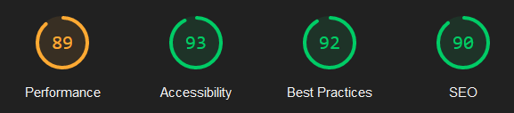

Analyse av nettstedene
Fikk gode resultater fra førstegangsrapporten slik illustrert av bildet over (legger bare ved ett bilde om gangen, men jeg har utført Lighthouse analyse av alle nettstenede mine og valgte den analysen som representerte som en helhet best) Spesielt da «Accessibility» og «Best Practices». Dette viser at siden min følger Universell Utforming (UU) og er lett å bruke for de fleste. Dette vises også ved tilgjengelighetserklæringen der jeg viser hvilke krav jeg mener jeg oppfyller og hvorfor.
Det som måtte endres på var «Performance» og «SEO». Her betyr SEO søkemotoroptimalisering. Informasjonen Lighthouse ga meg tydet på at bildene mine var hovedgrunnen til at «Performance» ikke gjorde det så bra under analysen. De anbefalte at jeg skalerte ned noen bilder og konverterte de til en webp i stedet for jpg eller png. Dette ville føre til at nettsiden min lastet inn raskere og ville kunne gi meg en bedre score.
Jeg konverterte da alle bildene mine til webp og skalerte bildene ned til en mer passende størrelse slik at «Performance» skulle forbedres. Så spesielt at logoen var alt for stor og jeg skalerte den ned fra 1500x1500 til 300x300.
En annen feil Lighthouse pekte på som jeg ikke var klar over var at når sidene ble skalert ned til mobil, ville ca 6% av sidene mine være leselige. Dette var på grunn av en feil jeg hadde gjort da jeg prøvde å skalere ned tekststørrelsen på teksten i tabellen og oppdaget ikke at alt tekst ble mindre. Jeg økte skriftstørrelsen til «calc(1em + 1vw)» for hovedparten av teksten, men beholdt tekstestørrelsen litt mindre for tabellinnholdet. Vil jo selvfølgelig at teksten skal være leselig på mobil.
Da disse endringene var gjort ble resultatene fra Lighthouse analysen betraktelig bedre. Både «Performance» og «SEO» hadde gått opp til grønt nivå og totalscorer til nettsiden ble på 94. Med de scorene der var jeg veldig fornøyd og følte ikke trangen til å forbedre noe mer. Hadde jeg hatt mer tid ville jeg selvfølgelig strevet for å oppnå 100 på alt, men det har jeg ikke.
Etter at jeg hadde utvidet nettstedene mine for å svare på oppgaven bedre sank performance. Bildet under viser endringen, og alle de andre sidene hadde veldig lik score. Lighthouse mente at fontawesome.css var unødvendig, men da jeg bruker en font fra de er jeg uenig. Jeg bestemte da at jeg heller lar fontawesome være på mine nettsteder og lar "Performance" være litt lavere. Scoren var nærmere 90 og mulig innsparing var litt over 1 sekund som illustrert i bildet under. Jeg skjønner heller ikke hvordan "Performance var høyere før de endringene da fontawesome var inkludert da også.

Nedenfor er en lenke til tilgjengelighetserklæringen for nettstedene. Der har jeg fylt ut en mal med universelle utformingskrav. Noen er oppfylt, noen er ikke oppfylt, noen er ikke relevant da jeg ikke har den type innhold på sidene mine, og noen er ikke sjekket. På de jeg syntes var mest relevant har jeg skrevet en kommentar om hvordan det kravet ble oppfylt eller hvorfor det ikke ble oppfylt.
Last ned tilgjengelighetserklæringen her.Oppsummering tiltak
Problem
Tiltak
Resultat
Bildeformat
Konverterte alle bildene til webp
Performance økte
Bildestørrelse
Skalerte ned bildene som var for store
Performance økte
Skriftstørrelse var for liten på små skjermer
Økte skriftstørrelsen på mindre skjermer
SEO økte
Ekstern CSS-ark
Fjernet normalize.css og la inn egne verdier i eget css-ark i stedet
Performance økte
Heuristisk evaluering
Av de 10 prinsippene så er det noen av de som jeg følte det ikke var noen grunnlag å analysere min nettside gjennom. For eksempel nummer 1: «Visability of system status». Min nettside har veldig lite funksjonalitet så blir feil å vurdere om nettsiden gir rikelig tilbakemelding når det er lite funksjonalitet og det lille som er der, ikke nødvendigvis trengte å fungere. Slik som delingsknapper til sosiale medier, var ikke noe krav om å fungere.
En av prisnippene som er veldig sentral for min nettside er nummer 2: «Match between system and real world». Det prinsippet er litt inne på noe av det samme som universell utformingskravet 3.1.4. Språket i teksten er forståelig for en som ikke spesialiserer seg på feltet og alle forkortelser er beskrevet. Man skal ikke være en ekspert på feltet for å forstå innholdet til nettsiden og det føler jeg man heller ikke trenger her. Språket er skrevet på en enkel måte med gode beskrivelser.
Nummer 4: «Consistency and standards» er også et prinsipp sentralt for min nettside. Igjen så er dette prinsippet inne på noe av det samme som universell utformingskravet 3.2.3. Rekkefølgen på navbaren er konsistent gjennom alle sidene og det er alltid flere måter til samme mål. Oppsettet på de ulike sidene er også ganske like slik at man ikke blir forvirret hver gang man går inn på en ny side.
En av mange ting jeg føler jeg kunne forbedret på var keyboard accessibility. Flere av universell utforminskravene og prinsipp 7 går ut på snarveier, og bruk av tastatur for å komme seg rundt. Dette ble dessverre ikke implementert på min nettside. Skulle gjerne implementert tastatur crawling og passet på at det ikke ble noen feller, men det ble ikke tid.
Det siste prinsippet jeg skal snakke om er nummer 8: «Aesthetics and minimalist design». Slik jeg tolket dette prinsippet så er det en annen måte å si «design uten innhold er pynt». På mine nettsider er det alltid innholdet som er i fokus og det er generelt lite støy på sidene. Dette gjorde jeg bevisst slik at leseren ikke skulle bli distrahert fra innholdet med mye «pynt» og «gøy».
Tilbake til hjemsiden...